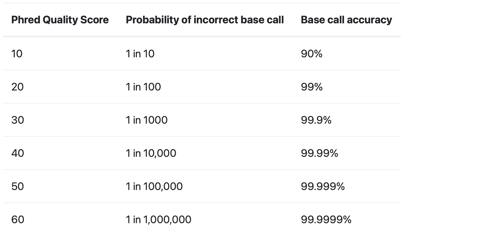
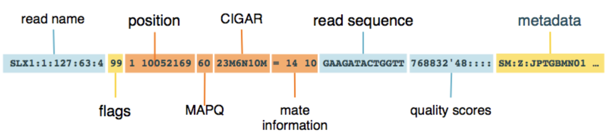
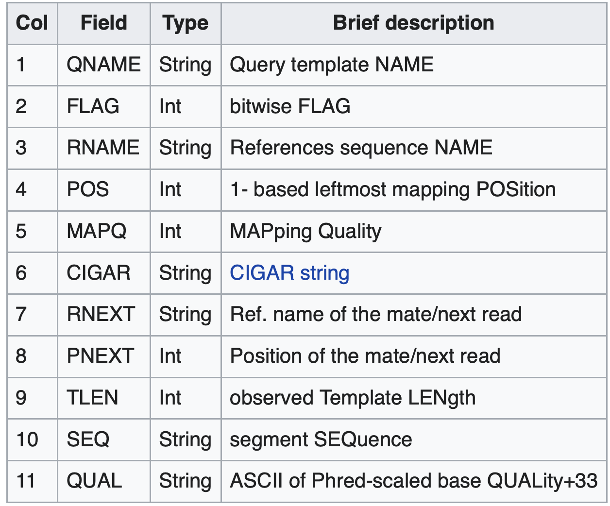

Introduzione all’RNASeq
Introduzione all’analisi RNASeq in R
Dipartimento di Biomedicina e Prevenzione
Marco Chiapello, Revelo Datalab
Nomber 2024
Pre-processing and Quality Control
Raw reads: The Starting Point
FASTA file
Definition
The FASTA format is a text-based format for representing either nucleotide sequences or amino acid sequences. Both nucleotides and amino acids are represented using single-letter codes. The first line before the nucleotide/amino acid sequence contains the name of the sequence, preceded by the “>” symbol.
File extension could be: fasta, fna, ffn, faa, fa, frn
Raw reads: The Starting Point
FASTA file
Definition
The FASTA format is a text-based format for representing either nucleotide sequences or amino acid sequences. Both nucleotides and amino acids are represented using single-letter codes. The first line before the nucleotide/amino acid sequence contains the name of the sequence, preceded by the “>” symbol.
>NM_001404729.1 Oryza sativa ribulose bisphosphate carboxylase small chain A
CTCAACAGCACTGCTACTGGACATACTCTACTACTACTAGCCAGTAAGCTAGCTAACTAACTACGTGGCT
ATGGCCCCCACCGTGATGGCCTCCTCGGCCACCTCCGTGGCTCCATTCCAAGGGCTCAANNNNNNNNNNNRaw reads: The Starting Point
FASTA file
Multi-fasta file:
>MCHU - Calmodulin - Human, rabbit, bovine, rat, and chicken
MADQLTEEQIAEFKEAFSLFDKDGDGTITTKELGTVMRSLGQNPTEAELQDMINEVDADGNGTID
FPEFLTMMARKMKDTDSEEEIREAFRVFDKDGNGYISAAELRHVMTNLGEKLTDEEVDEMIREA
DIDGDGQVNYEEFVQMMTAK
>NM_001404729.1 Oryza sativa ribulose bisphosphate carboxylase small chain A
CTCAACAGCACTGCTACTGGACATACTCTACTACTACTAGCCAGTAAGCTAGCTAACTAACTACGTGGCT
ATGGCCCCCACCGTGATGGCCTCCTCGGCCACCTCCGTGGCTCCATTCCAAGGGCTCAANNNNNNNNNNN
>HF583486.1 Homo sapiens SOD1 gene for alternative protein SOD1, isolate 144496
ATGGATTCCATGTTCATGAGTTTGGAGATAATACAGCAGGCTGTACCAGTGCAGGTCCTCACTTTAATCC
TCTATCCAGAAAACACGGTGGGCCAAAGGATGAAGAGAGGCATGTTGGAGACTTGGGCAATGTGARaw reads: The Starting Point
FASTQ format
Definition
The FASTQ format is a text-based format for storing both a biological sequence (usually nucleotide sequence) and its corresponding quality scores. Both the sequence letter and quality score are each encoded with a single ASCII character for brevity.
Raw reads: The Starting Point
FASTQ format
Definition
The FASTQ format is a text-based format for storing both a biological sequence (usually nucleotide sequence) and its corresponding quality scores. Both the sequence letter and quality score are each encoded with a single ASCII character for brevity.
A FASTQ file is identified by 4 lines:
- Line 1: begins with the “@” symbol and is followed by the sequence identifier (as in FASTA sequences)
- Line 2: contains the nucleotide sequence
- Line 3: begins with a “+” and may contain additional sequence descriptions
- Line 4: contains the quality values for the individual nucleotides
Raw reads: The Starting Point
FASTQ format
Definition
The FASTQ format is a text-based format for storing both a biological sequence (usually nucleotide sequence) and its corresponding quality scores. Both the sequence letter and quality score are each encoded with a single ASCII character for brevity.
@SEQ_ID
GATTTGGGGTTCAAAGCAGTATCGATCAAATAGTAAATCCATTTGTTCAACTCACAGTTT
+
!''*((((***+))%%%++)(%%%%).1***-+*''))**55CCF>>>>>>CCCCCCC65Raw reads: The Starting Point
FASTQ format
What does “quality score” mean?
The quality score is used to identify the probability of the correct identification of the corresponding nucleotide.
Raw reads: The Starting Point
FASTQ format
What does “quality score” mean?
The quality score is used to identify the probability of the correct identification of the corresponding nucleotide.

Raw reads: The Starting Point
FASTQ format
FASTQ files can be very large, so in most cases you won’t be dealing with myFile.fastq, but with myFile.fastq.gz.
This means that the file is compressed, so it is not readable by a text editor without first being decompressed.
Pre-processing Tools
FastQC
- What it is:
- A widely used tool for quality assessment of raw sequencing data.
- What it does:
- Generates comprehensive reports with various quality metrics.
- Visualizes data quality using interactive plots and graphs.
- Key metrics:
- Per base sequence quality
- Per sequence quality scores
- Sequence length distribution
- GC content
- Adapter content
- Overrepresented sequences
Pre-processing Tools
UMI-tools extract
- What are UMIs?
- Unique Molecular Identifiers (UMIs) are short random sequences attached to each cDNA molecule during library preparation.
- They act as “molecular barcodes” to identify unique molecules.
- Why are UMIs important?
- UMIs help to distinguish PCR duplicates from true biological duplicates.
- This improves the accuracy of gene expression quantification, especially for low-abundance transcripts.
- What does
UMI-tools extractdo?- Identifies and extracts UMIs from sequencing reads.
- Moves UMIs to the read name for downstream analysis.
- Requires information about the UMI location in the read.
- Benefits:
- Improved accuracy in gene expression quantification.
- Reduced bias due to PCR amplification.
UMI-tools
Pre-processing Tools
FastP & Trim Galore!
- Purpose:
- To clean up raw sequencing data and improve the accuracy of downstream analysis.
- Key functions:
- Adapter trimming: Remove adapter sequences from reads.
- Quality trimming: Trim low-quality bases from the ends of reads.
- FastP:
- All-in-one tool with extensive pre-processing features.
- Includes quality filtering, error correction, UMI handling, and more.
- Trim Galore!:
- Wrapper script for
cutadapt(adapter trimming) and often includesFastQC(quality assessment). - Focuses on adapter and quality trimming with optimized parameters.
- Wrapper script for
- Benefits:
- Improved alignment accuracy.
- Reduced false positives in variant calling and gene expression analysis.
- Increased efficiency of downstream analysis.
Pre-processing Tools
BBSplit
- What it is:
- A tool for removing contaminant reads from sequencing data.
- Types of contamination:
- Microbial DNA or RNA
- Host DNA (in the case of RNA-Seq from host-associated samples)
- Other unwanted sequences
- How it works:
- Aligns reads to a database of contaminant sequences.
- Removes reads that map to the contaminant database.
Pre-processing Tools
SortMeRNA
- What it is:
- A tool for filtering ribosomal RNA (rRNA) reads from sequencing data.
- Why is it important?
- rRNA often makes up a large proportion of total RNA.
- Removing rRNA enriches for mRNA and other non-coding RNAs of interest.
- How it works:
- Uses a database of rRNA sequences to identify and remove rRNA reads.
- Can be used with both single-end and paired-end data.
Alignment and Quantification
Alignment and Quantification
Read Alignment
- Purpose:
- To map sequencing reads to a reference genome or transcriptome.
- Why is it important?
- Identify the genomic origin of each read.
- Determine which genes or transcripts are expressed.
- Discover genetic variations (SNPs, indels).
- Challenges:
- Reads may contain sequencing errors.
- Reads may map to multiple locations (multi-mapping reads).
- Genomes contain repetitive regions.
- Output: A BAM (Binary Alignment/Map) file containing alignment information.
Alignment and Quantification
SAM/BAM Format: Storing Alignment Information
- What it is:
- The standard file format for storing read alignments.
- SAM (Sequence Alignment/Map): A text-based format.
- BAM (Binary Alignment/Map): A compressed binary version of SAM.
- Why is it important?
- Provides a standardized way to store alignment information.
- Allows for efficient storage and retrieval of large alignment datasets.
- Facilitates compatibility between different bioinformatics tools.
Alignment and Quantification
SAM/BAM Format: Storing Alignment Information
- Content:
- Header section: Contains metadata about the alignment (reference genome, aligner used, etc.).
@RG ID:1 SM:C5926_BM_IonCode_0118
@PG ID:samtools PN:samtools VN:1.16.1 CL:samtools view -H C5926_BM_IonCode_0118.reassembled.bamAlignment and Quantification
SAM/BAM Format: Storing Alignment Information
- Alignment section: Each line represents a single read and its alignment to the reference.
- Includes information about mapping position, quality scores, alignment flags, and more.


Alignment and Quantification
STAR Aligner

- What it is:
- A widely used splice-aware aligner for RNA-Seq data.
- Key features:
- Fast and efficient alignment.
- Accurate handling of spliced reads.
- Can detect novel splice junctions.
- Supports various RNA-Seq protocols.
- Advantages:
- High accuracy
- Speed
- Versatility
Alignment and Quantification
HISAT2
- What it is:
- Another popular splice-aware aligner for RNA-Seq.
- Key features:
- Based on the Burrows-Wheeler transform.
- Fast and memory-efficient.
- Supports both DNA and RNA alignment.
- Comparison to STAR:
- May be slightly faster for some datasets.
- May have slightly lower accuracy for certain types of reads.
- Choice often depends on specific needs and preferences.
Alignment and Quantification
UMI-tools dedup

- What it does:
- Identifies and removes PCR duplicates from RNA-Seq data using Unique Molecular Identifiers (UMIs).
- Groups reads with the same UMI and genomic mapping location.
- Selects the read with the highest quality score as the representative read for each group.
- Why is it important?
- PCR amplification during library preparation can introduce duplicate reads.
- These duplicates can bias gene expression estimates, especially for low-abundance transcripts.
UMI-tools deduphelps to correct for this bias and improve accuracy.
- Benefits:
- More accurate gene expression quantification.
- Reduced false positives in differential expression analysis.
- Improved sensitivity for detecting rare transcripts.
Alignment and Quantification
RSEM
- What it is:
- RSEM is a software package for estimating gene and isoform expression levels from RNA-Seq data.
- Key features:
- Uses a statistical model to estimate transcript abundance from aligned reads.
- Can handle different types of RNA-Seq data (single-end, paired-end).
- Provides various output formats (counts, TPM, FPKM).
Pseudo-aligners
A New Approach to Quantification
Pseudo-aligners
Fast and Efficient Transcript Abundance Estimation
- What they are:
- A class of RNA-Seq quantification tools that do not require exact alignment of reads to a reference genome.
- How they work:
- Use lightweight algorithms to assign reads to transcripts
- Effectively “pseudo-align” reads to transcripts without determining their precise genomic location.
- Use lightweight algorithms to assign reads to transcripts
- Advantages:
- Speed: Significantly faster than traditional alignment-based methods.
- Efficiency: Reduced computational resources required.
- Accuracy: Comparable or even superior accuracy for transcript quantification.
- Popular tools:
- Salmon
- Kallisto
- Applications:
- Gene expression profiling
- Differential expression analysis
- Transcript isoform identification
Pseudo-aligners
Kallisto vs Salmon
| Feature | Kallisto | Salmon |
|---|---|---|
| Algorithm | Pseudoalignment (k-mers) | Quasi-mapping (BWT) |
| Speed | Fast | Faster |
| Memory Usage | Lower | Higher |
| Features | Basic | More advanced (library types, bootstrapping) |
| Accuracy | High | High |
| Ease of Use | High | High |
| Output Formats | Abundance estimates | Abundance estimates, counts, TPM, etc. |
| Applications | Gene expression, DE analysis | Gene expression, DE analysis, isoform quantification |
Pseudo-aligners
Salmon Output File Formats

d
Post-alignment Processing
Post-alignment Processing
Refining Your Alignments
- What it is:
- A series of steps performed after read alignment to improve data quality and prepare for downstream analysis.
- Key steps:
- Deduplication: Removing PCR duplicates to avoid bias in gene expression estimates. (Blue line)
- Generating coverage tracks: Visualizing read distribution and assessing sequencing uniformity.
- (Optional) Other steps: Depending on the analysis goals, this may include filtering reads, recalibrating base quality scores, and other processing steps.
- Why is it important?
- Improves the accuracy and reliability of downstream analysis.
- Reduces noise and bias in the data.
- Facilitates data interpretation and visualization.
Post-alignment Processing
SAMtools: Manipulating and Analyzing Alignments
- What it is:
- A suite of command-line utilities for working with SAM/BAM files.
- A Swiss Army Knife for SAM/BAM Files
- Key functions:
samtools sort: Sorts alignments in a BAM file by coordinate.- Why is sorting important? Many downstream tools require sorted BAM files for efficient processing.
samtools index: Creates an index file for a sorted BAM file.- Why is indexing important? Allows for fast retrieval of specific regions of the alignment.
samtools stats: Generates statistics about an alignment file.- Provides insights into alignment quality, read depth, and other metrics.
Post-alignment Processing
Picard MarkDuplicates: Deduplication without UMIs
- How it works:
- Identifies duplicates based on mapping coordinates of reads.
- Marks duplicate reads in the BAM file.
- Considerations:
- Less accurate than UMI-based methods.
- Can be used when UMIs are not available.
- Often used in combination with other filtering steps.
Post-alignment Processing
BEDTools genomecov: Quantifying Read Depth
- What it does:
- Calculates the number of reads overlapping each position in the genome.
- Outputs a coverage file in various formats (BEDGRAPH, bed, etc.).
- Options:
- Calculate coverage for different strand orientations.
- Normalize coverage by library size.
- Generate histograms of coverage depth.
Downstream Analysis
Downstream Analysis
RSeQC: Comprehensive Quality Assessment of Your RNA-Seq Data
- What it is:
- A suite of tools for RNA-Seq quality control and analysis.
- Key functions:
- Read distribution: Assess the distribution of reads across different genomic features (e.g., coding regions, introns, UTRs).
- Gene body coverage: Evaluate the uniformity of coverage across gene bodies.
- Strand specificity: Check the strand specificity of the library.
- Junction saturation: Determine if sufficient sequencing depth has been achieved for junction detection.
- Other QC metrics: Assess rRNA contamination, insert size distribution, and more.
- Benefits:
- Provides comprehensive quality assessment of RNA-Seq data.
- Identifies potential biases and issues in library preparation or sequencing.
- Helps to ensure the reliability and accuracy of downstream analysis.
Downstream Analysis
Preseq: Assessing the Diversity of Your Library
- What it is: A tool for estimating the complexity of a sequencing library.
- Why is library complexity important?
- Library complexity refers to the number of unique DNA fragments in your library.
- Higher complexity means a more diverse representation of the original RNA population.
- Low complexity can lead to reduced sequencing efficiency and biased results.
- What does Preseq do?
- Uses statistical modeling to predict the number of unique reads that would be obtained with deeper sequencing.
- Helps to assess whether additional sequencing is likely to yield new information.
- Can be used to compare the complexity of different libraries.
- Benefits:
- Optimize sequencing depth.
- Avoid unnecessary sequencing costs.
- Improve the quality and efficiency of RNA-Seq experiments.
Downstream Analysis
Qualimap RNA-Seq: A Deep Dive into Your RNA-Seq Data
- What it is:
- A comprehensive tool for quality control and analysis of RNA-Seq data.
- Key features:
- Alignment quality: Assesses mapping quality, mismatch rates, and indel rates.
- Coverage analysis: Evaluates coverage uniformity across genes and transcripts.
- Junction analysis: Examines splice junctions and identifies non-canonical junctions.
- Transcript coverage: Assesses coverage of known transcripts and identifies potential novel transcripts.
- rRNA content: Estimates the proportion of rRNA reads in the data.
- 5’ and 3’ bias: Detects biases in read coverage towards the 5’ or 3’ ends of transcripts.
- Benefits:
- Provides detailed insights into the quality of RNA-Seq alignments.
- Identifies potential biases and technical artifacts.
- Helps to ensure the reliability and accuracy of downstream analysis.
Downstream Analysis
Kraken2: Identifying Microbial Communities in Your Samples
- What it is:
- A fast and accurate tool for assigning taxonomic labels to sequencing reads.
- Why is it useful for RNA-Seq?
- RNA-Seq data can sometimes contain reads from microbial organisms (e.g., in microbiome studies, host-associated samples).
- Kraken2 can identify and classify these microbial reads, providing insights into the microbial community present in the sample.
- How it works:
- Assigns taxonomic classifications to reads based on the best match.
- Benefits:
- Fast and efficient classification.
- Accurate identification of microbial species.
- Can be used with both DNA and RNA sequencing data.
Downstream Analysis
Differential Expression: Finding the Genes that Matter
- What it is:
- Identifying genes that are expressed at significantly different levels between two or more conditions (e.g., treated vs. control, healthy vs. diseased).
- Why is it important?
- Uncover genes involved in specific biological processes or disease states.
- Identify potential biomarkers or therapeutic targets.
- Tools:
DESeq2: A popular R package for differential expression analysis.edgeR: Another widely used R package.limma: A flexible package for linear modeling and differential expression analysis.
Downstream Analysis
MultiQC: Your One-Stop Shop for QC Reports
- What it is: A tool that aggregates results from multiple bioinformatics tools into a single HTML report.
- Why is it useful for RNA-Seq?
- RNA-Seq analysis involves multiple QC steps (FastQC, SortMeRNA, Trim Galore!, etc.).
- MultiQC combines the results from these tools into a user-friendly report.
- This saves time and simplifies the QC assessment process.
- Key features:
- Supports a wide range of bioinformatics tools.
- Generates interactive plots and tables for easy visualization.
- Highlights potential issues and inconsistencies in the data.
- Facilitates comparison of QC metrics across multiple samples.
- Benefits:
- Saves time and effort in QC assessment.
- Improves clarity and organization of QC results.
- Facilitates data interpretation and decision-making.
Domande?